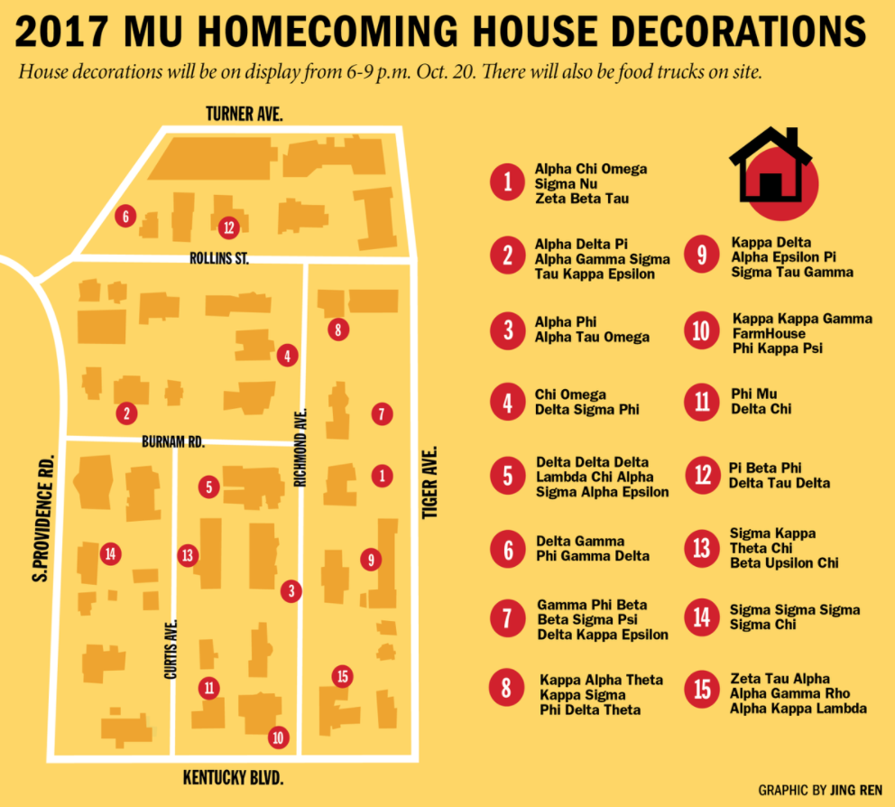

Columbia Missourian
Sep 1, 2016
Head-on crash in northern Boone County sends three to hospital
COLUMBIA — A head-on collision Wednesday night in northern Boone County sent three people to the hospital, including one by helicopter, according to Missouri State Highway Patrol reports.
Nicholas Pudney, 17, was driving east on Route F when he crossed into the westbound lane around 7:25 p.m near Bourbon Road to pass another vehicle, according to the report.
Pudney's 2008 Pontiac Grand Prix struck an oncoming 1999 Cadillac "nearly head on," according to the report.
Pudney of Moberly suffered serious injuries and was airlifted to University Hospital, according to the report. Two people in the Cadillac — Joseph Albright, 47, and Alyson Albright, 14, both of Clark — were taken to University Hospital by ambulance.
None of the injured were wearing seat belts. Both cars were totaled.
While Pudney is in the hospital, troopers have time to continue the crash investigation and determine whether to cite him, said Sgt. Scott White of the Highway Patrol.
Columbia Missourian
Oct 1, 2017
Homecoming House Decorations Map
